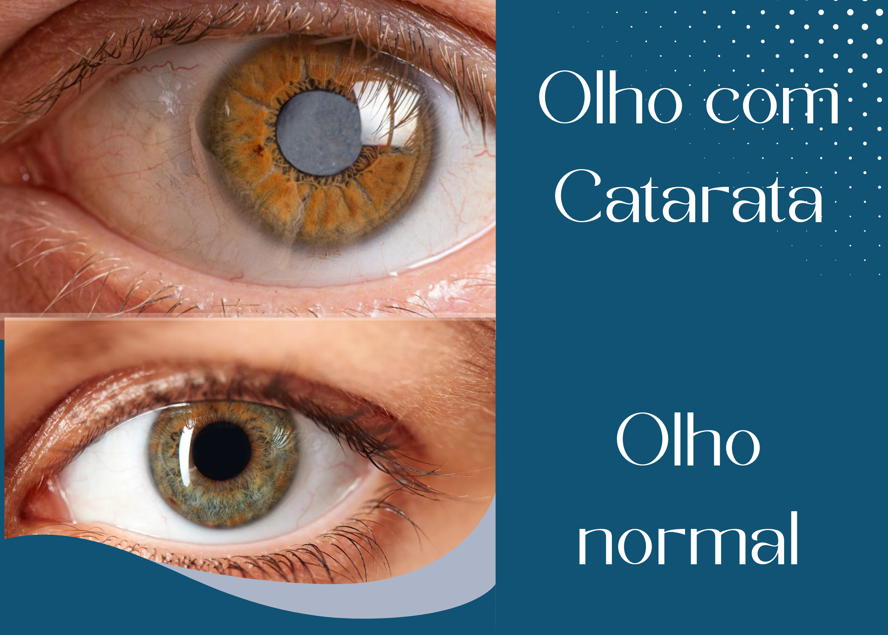

Catarata
O que é catarata?
A catarata é uma condição que causa a perda progressiva da transparência do cristalino, a lente natural dos olhos. Essa opacificação impede a entrada correta de luz, deixando a visão turva, como se houvesse uma névoa constante. É uma das principais causas de cegueira tratável no mundo.
Sintomas
Os principais sintomas são:
- Visão embaçada: como se estivesse olhando por um vidro sujo;
- Sensibilidade à luz: faróis ou luz solar podem causar desconforto;
- Dificuldade para enxergar à noite;
- Percepção de cores alterada: tons podem parecer mais apagados;
- Necessidade de trocar o grau dos óculos com frequência.
Causas
A causa mais comum é o envelhecimento natural, mas também pode surgir devido a:
- Traumas oculares;
- Exposição excessiva ao sol sem proteção;
- Uso prolongado de corticoides;
- Doenças como diabetes;
- Tabagismo e má alimentação.
Tipos de Catarata
Existem vários tipos de catarata. Os mais comuns são:
- Senil: relacionada à idade, é a forma mais frequente;
- Congênita: presente desde o nascimento, pode ser hereditária ou causada por infecções na gravidez;
- Secundária: resultado de doenças como diabetes ou do uso de medicamentos;
- Traumática: surge após lesões nos olhos.
Diagnóstico
O diagnóstico é feito pelo oftalmologista, geralmente por meio de exames clínicos e o uso de um equipamento chamado oftalmoscópio, que permite observar a opacidade do cristalino.
Prevenção
Algumas atitudes ajudam a prevenir ou retardar o aparecimento da catarata:
- Usar óculos escuros com proteção UV;
- Manter uma alimentação rica em vitaminas antioxidantes;
- Evitar fumar;
- Controlar doenças como diabetes;
- Não usar colírios sem orientação médica.
Tratamento
O único tratamento eficaz para a catarata é a cirurgia, em que o cristalino opaco é substituído por uma lente intraocular artificial. A tecnologia atual permite procedimentos rápidos, muitas vezes com o uso de laser, e recuperação segura.
A técnica mais moderna usada hoje é a facoemulsificação, na qual o cristalino é fragmentado com ultrassom e aspirado. Em muitos casos, o procedimento é feito com o auxílio de laser, o que aumenta a precisão e a segurança. A recuperação costuma ser rápida, e a maioria dos pacientes volta a enxergar com nitidez em poucos dias.
Informações adicionais
- A catarata é contagiosa? Não, não é transmissível.
- Ela pode voltar após a cirurgia? Não. Uma vez retirada e substituída a lente, a catarata não retorna.
- Existe alguma contraindicação para a cirurgia? Raramente. O médico avalia cada caso com base na saúde ocular e geral do paciente.